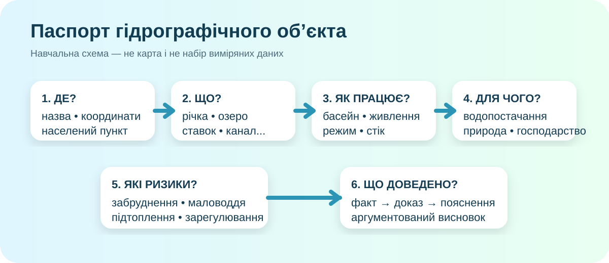

Що має вийти за 35 хв
Річка, озеро, ставок, водосховище, канал, джерело тощо.
Басейн, притока/головна річка, куди зрештою потрапляє вода.
Живлення, режим, береги, вода, роль для людей і природи.
Забруднення, маловоддя, підтоплення, зарегулювання тощо.
Факт → доказ → пояснення.

Це навчальна схема структури роботи, не географічна карта.
Знайдіть об’єкт і доведіть, що це саме він
Працюйте щонайменше з двома джерелами: картою/геопорталом і ще одним надійним джерелом. Для поверхневих вод в Україні основним державним джерелом є геопортал Держводагентства та Державний водний кадастр.
Джерело В
Офіційний сайт громади, басейнового управління або природоохоронної установи.
Водний кадастрЗаповніть опис гідрографічного об’єкта
Міні-детектор помилок
Швидка схема для річки
| Питання | Що шукаємо |
|---|---|
| Звідки? | витік / верхів’я |
| Куди? | гирло / головна річка / море |
| Чим живиться? | сніг, дощ, підземні води |
| Як змінюється? | повінь, паводки, межень |
| Що змінила людина? | греблі, берегоукріплення, забір води, забудова |
Один реальний ризик — і жодної драматизації без доказів
Забруднення
Шукайте офіційні дані моніторингу, повідомлення органів влади або спостережувані ознаки. «Вода брудна» — ще не аналіз.
Маловоддя
Пов’язуйте з водністю, опадами, температурою, забором води; не плутайте одноразове падіння рівня з довгим трендом.
Підтоплення / паводок
Перевірте рельєф, близькість заплави, забудову й конкретні випадки, якщо вони документовані.
У 2026 році державний моніторинг вод охоплює сотні пунктів спостереження; тому для багатьох великих водних об’єктів можна знайти не лише опис, а й офіційні дані.
Зберіть аргумент
Самоперевірка • 10 балів
Орієнтовно: 0/10
Готовий текст для здачі
Джерела для роботи
Державний водний кадастр — поверхневі води • Геопортал «Водні ресурси України» • OpenStreetMap • Електронна бібліотека ІМЗО
Практична робота не вимагає «ідеального» набору чисел. Вимагає коректного алгоритму, перевірюваних джерел і чесної аргументації.